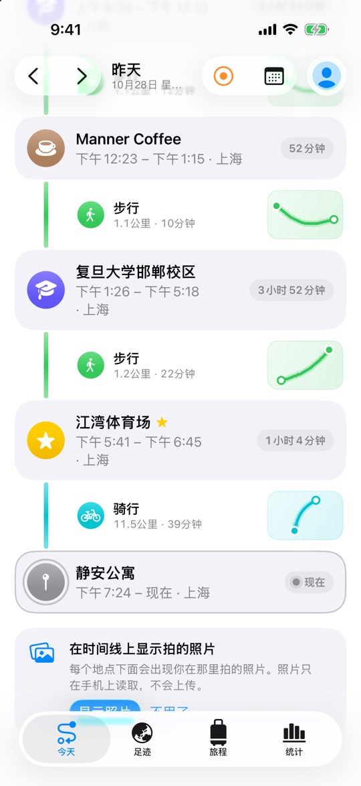
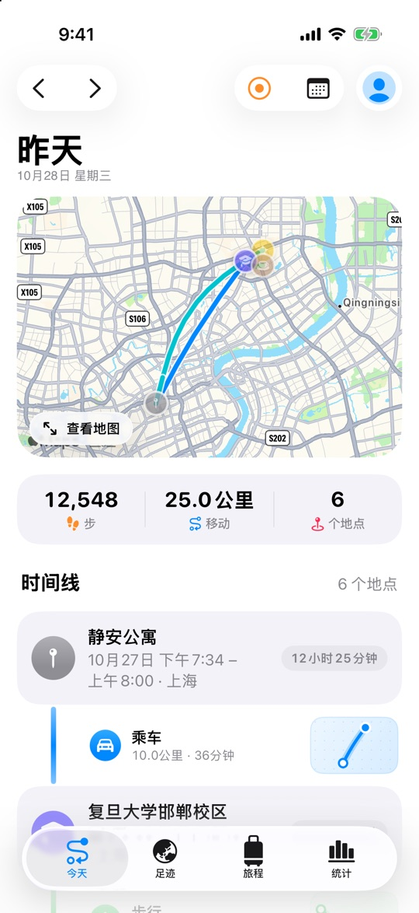
全天自动记录
走路、骑车、坐车、搭地铁、飞行，漫迹在后台安静地记下路线和停留过的地方，自动认出城市、国家和地标。
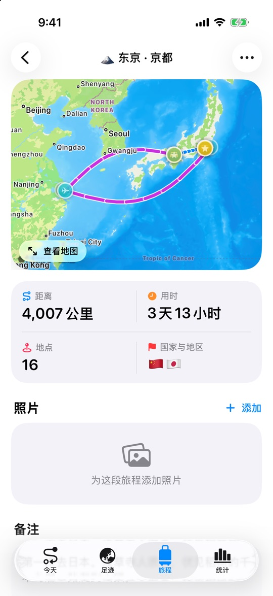
点亮中国，点亮世界
一本会自己盖章的护照，三十四枚省份印，城市纪念章，还有中国与世界各一百处“此生必去”。
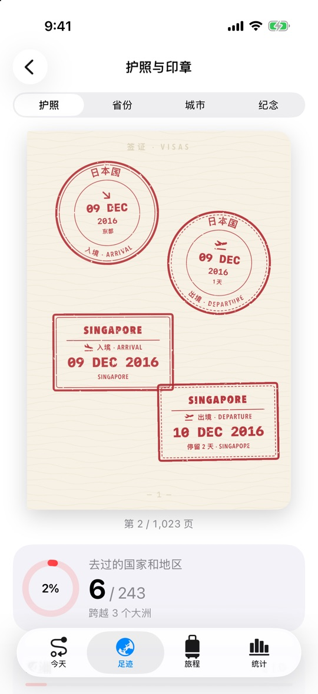
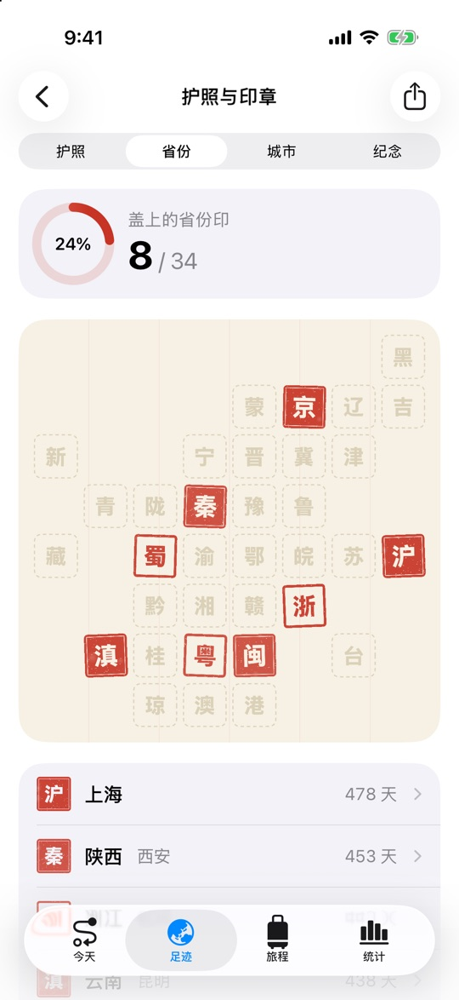
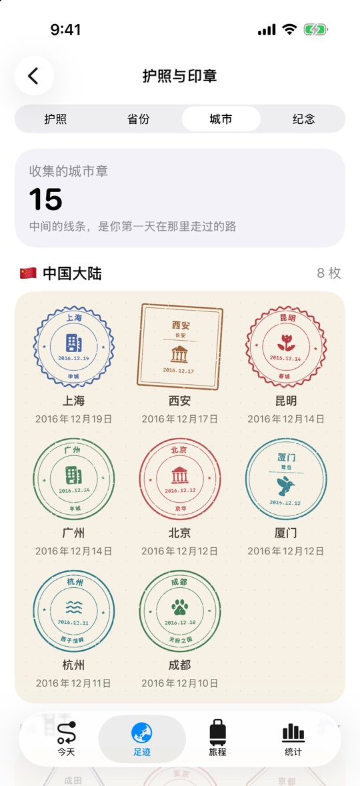
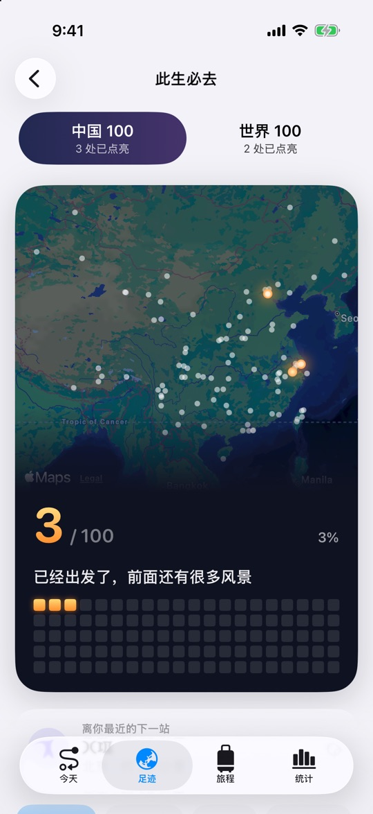
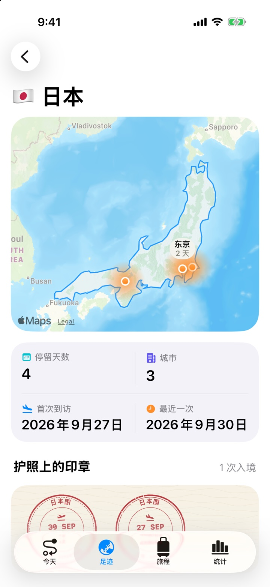
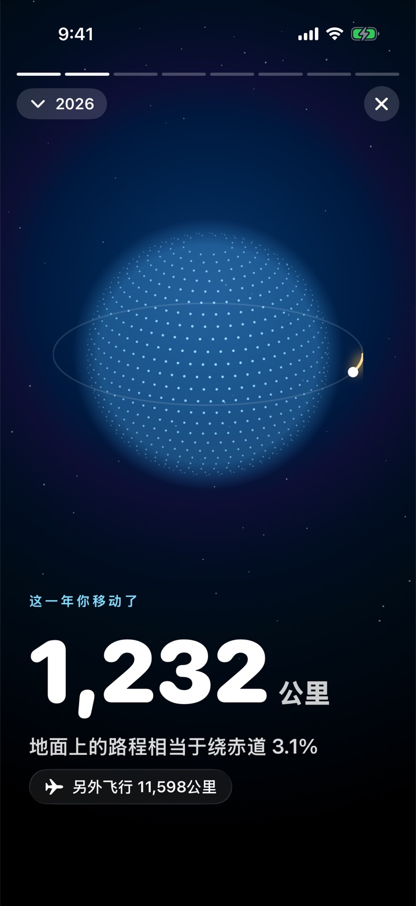
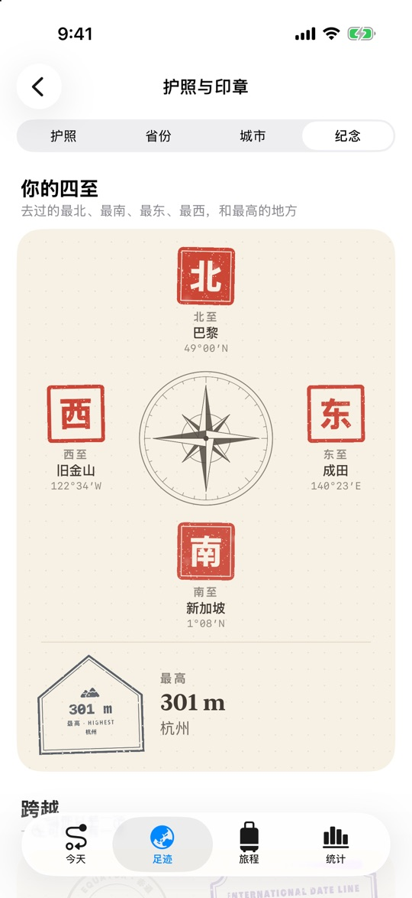
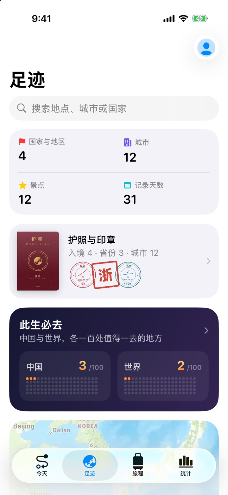
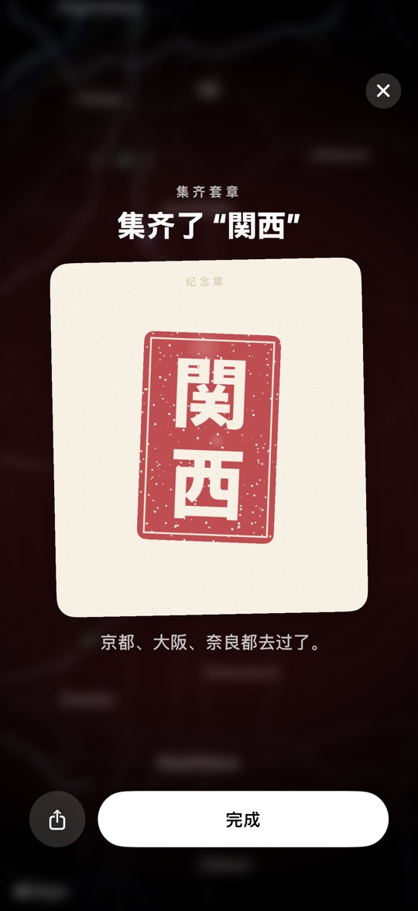
你的故事
漫迹会读懂你的足迹，把它们写成一幅画像、一段旅程，和一张张“第一次”的车票。
夜行者、早起的人、城市收藏家、好奇的探索者……过去一年，你是哪一种旅人？
把你走过的路铺在京杭大运河、318 国道、丝绸之路上，看看你走到了哪一站。
第一次出国、第一次到一座城市、第一次坐飞机……人生里的第一次，被印成一张张车票。
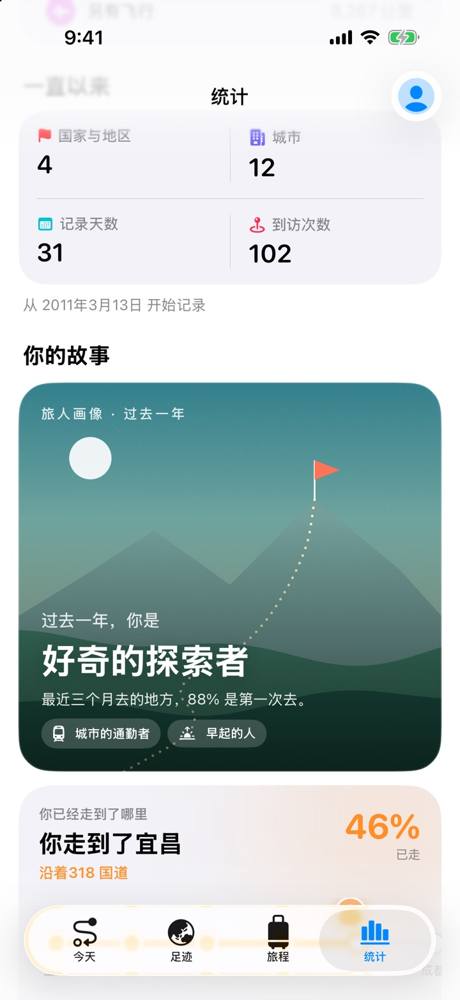
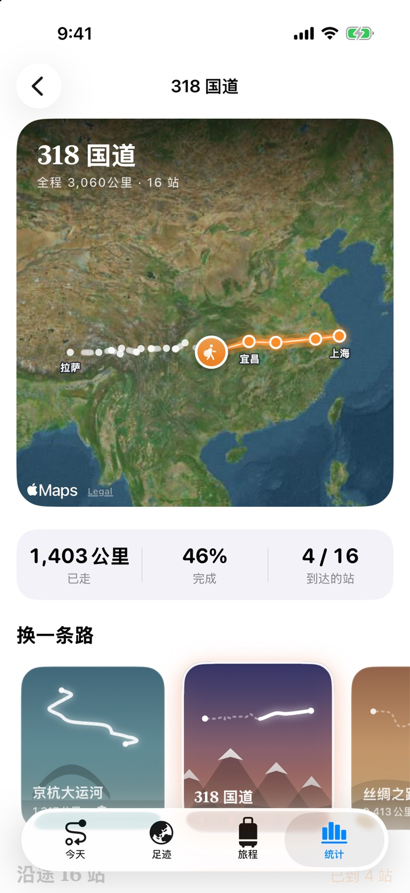
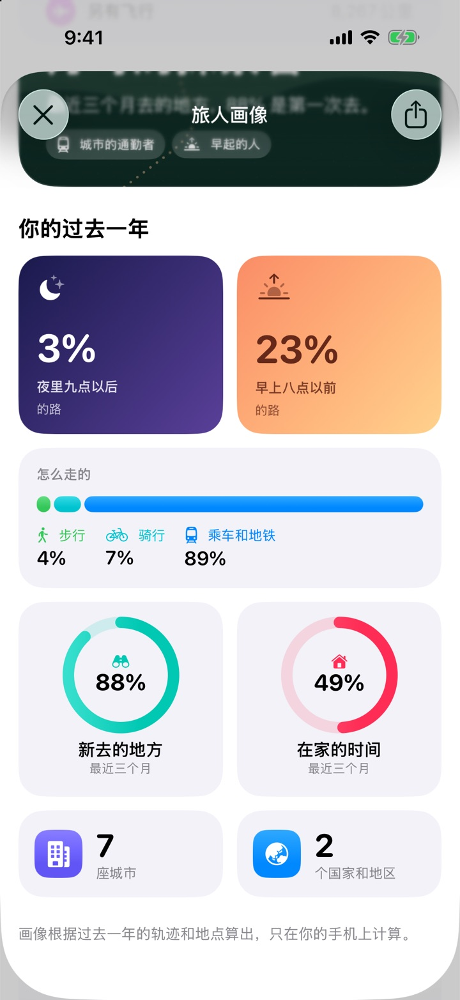
平行足迹
和朋友互相共享足迹，看看你们哪天在同一座城市，在哪里擦肩而过，又去过哪些同样的地方。
只共享粗略的摘要：家附近 2 公里、地点名称、路线和照片都不会共享。比对在各自的手机上进行。
年度足迹
到了年底，漫迹会把这一年讲给你听：去了多少座城市、走了多远、最常去哪里、最远到过哪里。做成一张海报，分享给想分享的人。
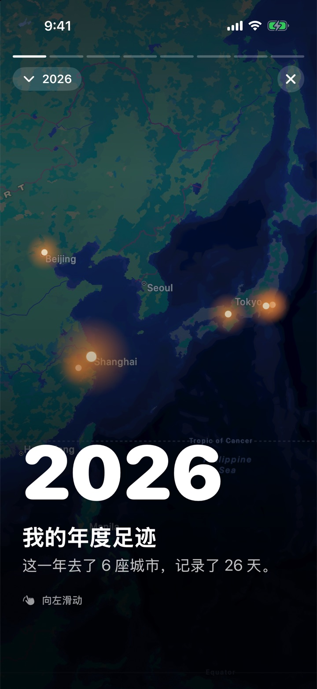
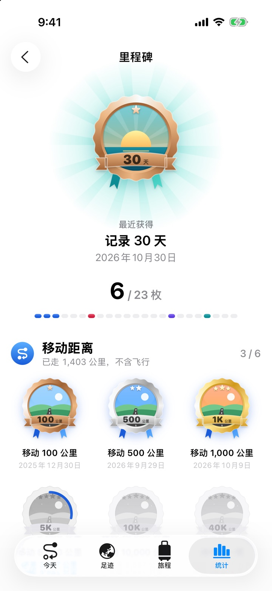
Apple Watch
徒步、跑步、骑行，从手腕开始记录。路线存进“健康”，回到 iPhone 身边时自动同步进你的足迹。
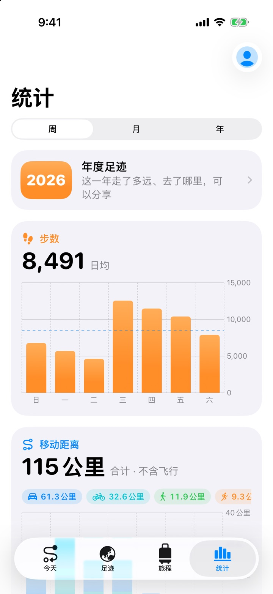
隐私
漫迹没有自己的服务器。你去过的每一个地方，只保存在你的设备和你自己的 iCloud 里。